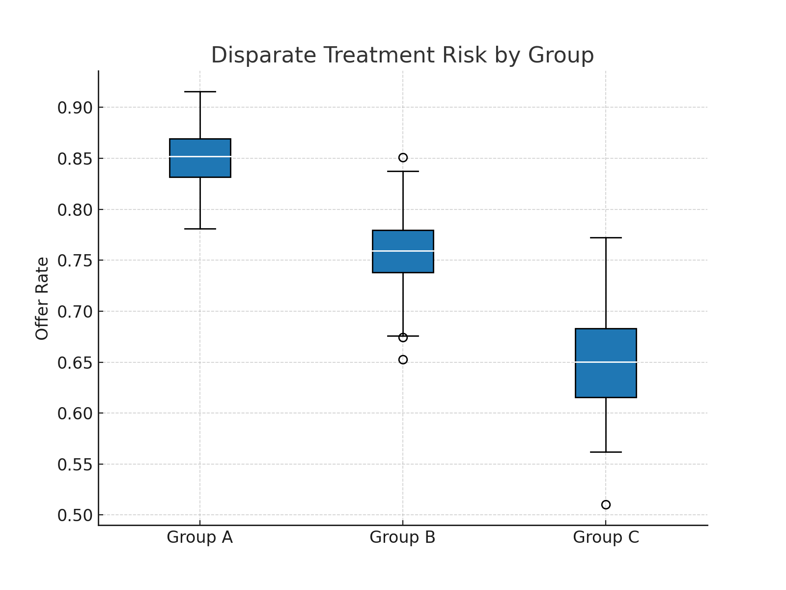

My Projects
These projects are related to my professional career. To ensure confidentiality is maintained data and database verbiage/content have been changed or made up entirely. The purpose of these projects is to illustrate the project concepts.

Conflict of Interest Detection
Utilized disparate data sources with both unstrucutred and structred formats. Teradata-SQL was used for data extraction and cleansing. SAS was used for automtion.

Presence Detection System
Developed a system using Python, SQL, and SAS to detect individual presence during interactions.

Anomaly Detection in Fraud Money Movement
An oversimplified methodology used to find nefarious high dollar money movement.
PremierPlus Retention Offer
In response to significant customer attrition, I developed a rapid analytics and monitoring solution for a newly launched high-value retention offer. This included detection of eligibility gaps, improper application behavior, manual process compliance, and potential bias — all delivered within two weeks and continuously iterated.
Data Science Portfolio
Below are some sample projects that I completed as part of my Master's in Data Science.

Classifying Data with Alcest
This was a fun project where I utilized audio datapoints to illustrate one of my favorite band's musical styles. The project demonstrates a workflow covering data preprocessing, model selection, and performance evaluation. You can actually SEE the audio showcased to tell a story.

Data Prep for Spotify Listening Habits
Ingestion, cleaning, and transformation of streaming data to uncover listening trends.

Data Mining: Trump Tweets
This is a very apolitical analysis. The project requirement was to find streaming data that can be wrangled and turned into meaningful insight. In this analysis I mined Twitter data (live data) for sentiment and topic analysis related to Trump's tweets.

Predictive Analytics: Covid Economy
Predicting economic trends during Covid using advanced statistical models.

VGX Sentiment Analysis
Evaluating social media sentiment on VGX using NLP techniques.

Airbnb Exploratory Data Analysis
Exploratory analysis on Airbnb listings to uncover market trends.